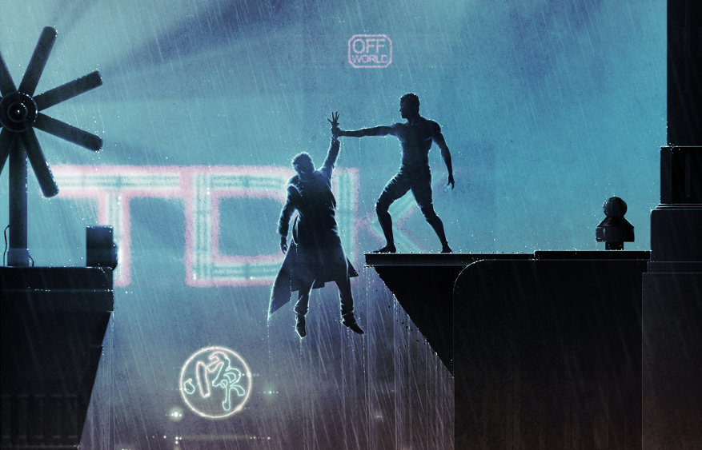

Themes & Humanity
Historically, sentience has been fairly easy to define. Humans are sentient; animals are not. Prior to the twentieth century, humans were the only beings that could write poems, perform mathematical computations, and make complex machines. Therefore, only humans were sentient. However, with the rise of computers, sentience becomes harder to define. It is now possible to write a computer program that can carry on a conversation so skillfully that it is difficult, if not impossible, to distinguish its responses from those of a human. Can such a program be defined as "sentient"? Phrased more generally, the question becomes, "Can any artificial life form really be considered alive?" The 1980's movie Blade Runner seems to answer in the affirmative.
Blade Runner is the story of a future world in which genetically engineered "replicants"--artificial life forms designed to be indistinguishable from humans--are used as slave labor on off-world colonies. The only way to distinguish a human from a replicant is to administer a complex psychological test designed specifically to test for emotional responses. Replicants, who have no emotions, respond to the test differently than humans. Because of a recent revolt on an off-world colony, replicants are not allowed on earth. Special police squads known as "Blade Runners" track down and kill any replicant found on earth. The movie focuses on one group of renegade replicants and one Blade Runner, named Deckard, who is pulled out of retirement to kill them.
At first, Deckard's task seems simple: find the replicants and kill them. After all, they're not human; they're just genetically engineered robots who aren't doing their jobs. But then Deckard meets Rachael--a replicant who thinks she's human. The engineers who created Rachel gave her artificial memories, in the hope that these "memories" would make her more stable. Even though Deckard knows Rachael is a replicant, he finds himself falling in love with her. As the movie progresses, Deckard begins to see the replicants as more human than he had previously thought. By the end of the movie, Deckard realizes that the line between human and non-human isn't nearly as clear-cut as he used to think.
Blade Runner raises some very interesting points about what constitutes a sentient being. During the movie, one of the replicants repeats Descartes' definition of existence: "I think, therefore I am." The replicants are at least as intelligent as their human designers, if not more so. They can easily pass for human, if they so choose. In fact, in the absence of a complex psychological test, they are indistinguishable from humans. Thus, it follows that they should be granted the same basic rights as humans.
Alan Turing, a well-known British mathematician, once devised a test to determine whether or not a computer could think. Turing said that if a computer could hold a written conversation with a human and fool the human into thinking he/she was conversing with another human, the computer could be said to be intelligent. The replicants in Blade Runner go far beyond this test. Not only can they converse with a human, but they can hold their own in extremely complex and varied conversation.
Thus far, I've limited my discussion to the replicants' intelligence. However, replicants also exhibit characteristics that no one expects a mere robot or computer to have. Recently, I was watching an episode of the original Star Trek. In this episode, called "Arena," a Federation outpost is destroyed by an unknown alien vessel. When the Enterprise arrives, Kirk finds the alien ship and gives chase. Just as the Enterprise is about to catch up to the alien ship, both vessels are intercepted by an advanced alien race known as the Metrons. The Metrons kidnap Kirk and the captain of the alien ship and put them both on a deserted planet for a fight to the death. The winning captain will be allowed to take his ship and leave, while the losing captain's ship will be destroyed. Kirk eventually wounds his opponent badly enough to render him immobile. However, as Kirk is about to deliver the killing blow, he has a change of heart, and he announces to the Metrons that he refuses to kill the alien captain. Moved by this display of mercy, the Metrons allow both ships to leave unharmed. After the episode, Leonard Nemoy commented on the show. He pointed out that compassion, perhaps more than anything else, is what separates us from animals. Only an advanced, intelligent being will show mercy on its enemy without expecting anything in return. Near the end of Blade Runner, Deckard fights with the leader of the replicants, a man named Roy Batty. Batty soon gains the upper hand, and Deckard ends up hanging off the side of a tall building, about to fall. But just as Deckard falls, Batty grabs his hand and saves him. Deckard had not only tried to kill Batty, but he had killed a woman Batty deeply cared for. Yet Batty still chooses to save Deckard's life, knowing that Deckard would not have done the same for him. This, more than anything else, shows that an artificial life form can be human.
Blade Runner isn't the first science-fiction story to deal with the humanity of artificial life. One of the characters in Star Trek: The Next Generation is an android--a completely artificial humanoid. In the episode, "The Measure of a Man," the android, whose name is Data, is put on trial to determine whether or not he is a sentient being. During the course of the trial, the prosecutor removes Data's arm to demonstrate his artificiality, and later turns him off, thus demonstrating that Data is no more than a machine. However, later in the trial, Captain Picard, who is defending Data, makes a moving speech in favor of Data's humanity. He points out that humans are created by their parents, yet parents don't own their children. He argues that, even though Data was built instead of born, he should still be given the same freedom that is afforded to all other sentient beings.
It may never be possible to completely answer the question of whether or not artificial life forms are truly alive. In the movie 2001: A Space Odyssey, mission commander David Bowman is asked whether he thinks HAL 9000, the onboard computer, has emotions. Bowman replies, "Well, he acts like he has genuine emotions. Of course, he's programmed that way, to make it easier for us to talk to him. But as to whether or not he has real feelings is something I don't think anyone can truthfully answer." Despite this ambiguity, I believe that any artificial life form that is advanced enough to emulate humans should be given the benefit of the doubt.
Written by Jonathan Blanton